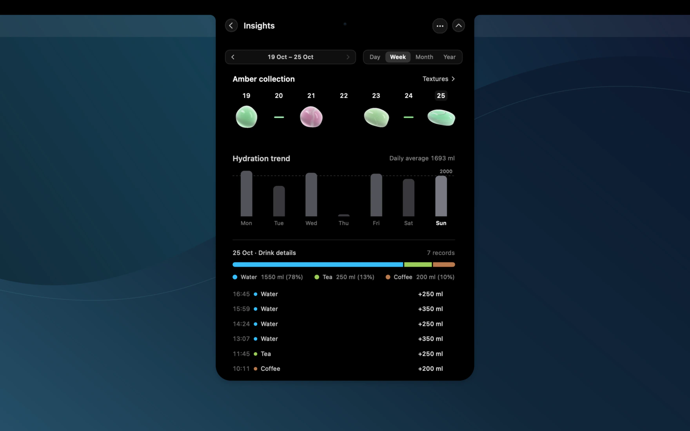
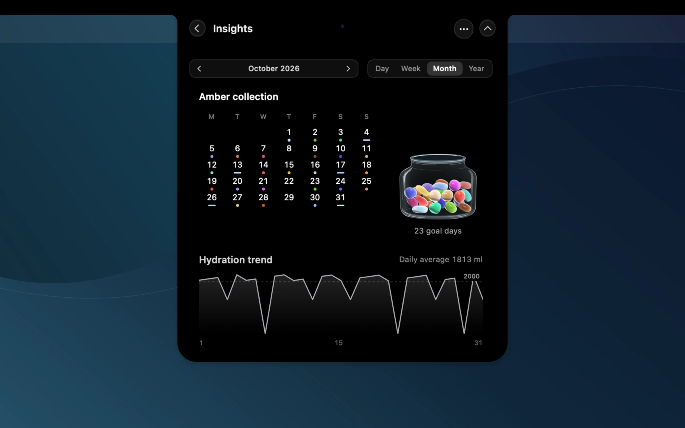
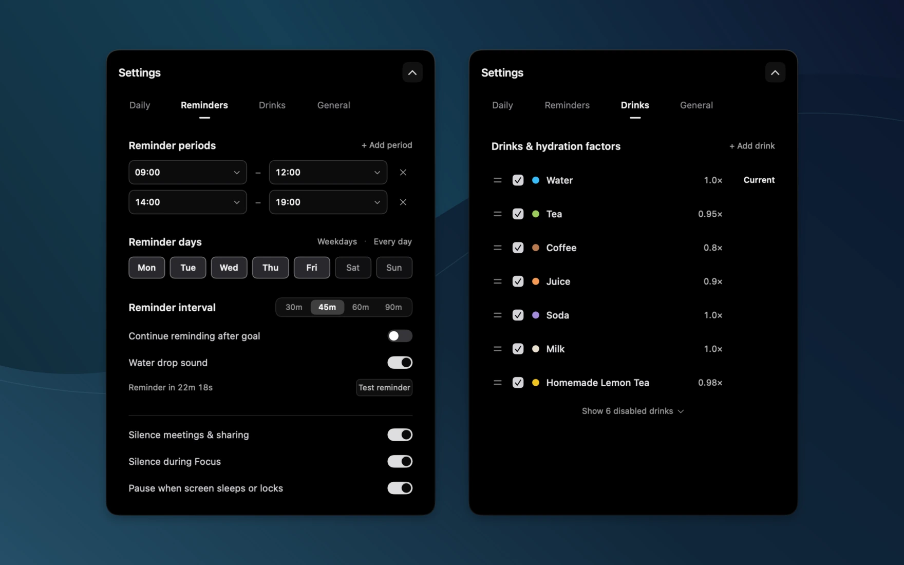

Hydration, right in
your Mac’s notch.
Log a drink in seconds and set reminders that fit your day.
Reach your daily goal and collect a piece of amber.
Coming to the Mac App StoremacOS 14 or later

Log a drink from the notch
The panel stays tucked into your Mac’s notch and opens automatically when a reminder is due. To log a drink anytime, click the menu bar droplet or press ⌥ W.
Turn a daily goal into amber
When you reach your goal, a droplet rises and forms a piece of amber. The drinks you logged give it its color, and the date gives it its shape.

See how much you drank this week
See which days you met your goal and which days you drank less. Select a day for a breakdown by drink type and a list of what you logged.

A month of amber
Use the Sipmetra Pro calendar to revisit the days you reached your goal. Open the glass jar to see the amber you collected that month.

Make reminders fit your day
Choose when and how often you get reminders, with room for a lunch break. Log water, tea, or coffee, and move your most frequent drinks to the top.
